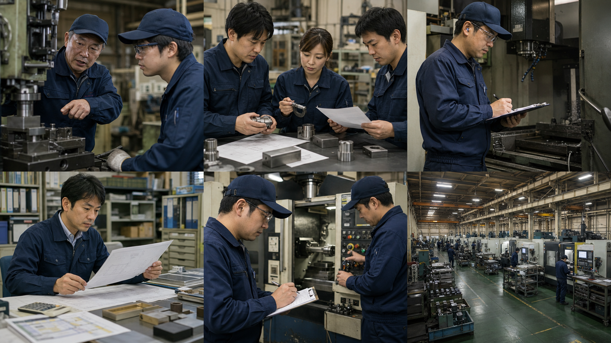
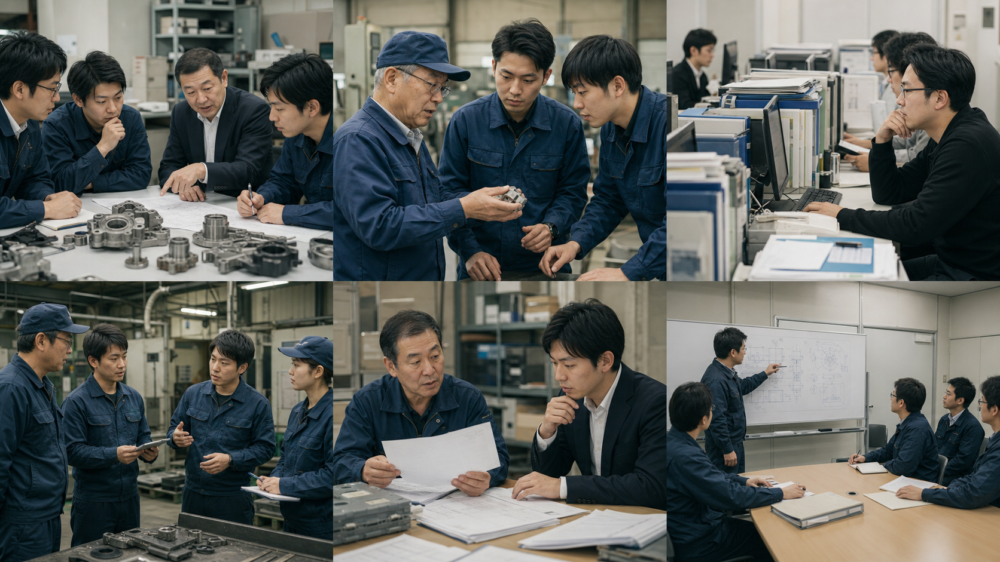

中小製造業の
お役立ち記事
従業員20〜200人規模の企業を主な対象に、属人化した判断と業務を次の担当者へ引き継ぐ実務を解説します。
製造業向け支援を見る ↗SEARCH BY THEME
課題から記事を探す。
売り込みではなく、現場で検討を始めるための判断材料をテーマ別に整理しています。

技術承継中小製造業の技術承継｜熟練者の暗黙知を残す進め方
熟練者の経験を動画や手順書だけで終わらせず、若手が判断・再現できる技術資産へ変える手順を解説します。
記事を読む ↗品質・標準化中小製造業の品質判断を標準化する方法｜不良対応を属人化させない
検査基準や不良対応を特定のベテランに依存させず、誰でも同じ順序で判断できる状態へ整える方法を解説します。
記事を読む ↗設備保全中小製造業の設備保全を引き継ぐ｜故障対応と点検の標準化
設備の癖や復旧手順をベテランの記憶から切り離し、予防保全と復旧を継続できる形にする方法を解説します。
記事を読む ↗見積・原価中小製造業の見積原価を標準化｜経験者依存を減らす方法
材料、工程、段取り、外注、歩留まりの見方をそろえ、見積利益のばらつきを減らす実務設計を解説します。
記事を読む ↗品質・標準化中小製造業の加工条件を標準化｜熟練者の微調整を残す
設備や材料の違いに応じた加工条件の調整を、観察点・判断基準・結果のつながりとして残す方法を解説します。
記事を読む ↗
品質・標準化中小製造業の不良対応を仕組み化｜原因切り分けと再発防止
不良発生時の初動、原因の切り分け、停止判断、再発防止を誰でも進められる業務へ変える方法を解説します。
記事を読む ↗技術承継ベテラン退職前に中小製造業が行う技術引き継ぎ
退職日から逆算し、残す技術の優先順位、観察、若手による再現確認までを進めるチェックリストを紹介します。
記事を読む ↗デジタル資産中小製造業のExcel・VBA属人化対策｜止まる前の棚卸し
見積、工程、品質集計を支えるExcelやVBAを安全に棚卸しし、仕様・入出力・復旧方法を残す手順を解説します。
記事を読む ↗デジタル資産中小製造業のデジタル化は何から始める？業務棚卸しの手順
ツール導入を目的にせず、止まる業務と残すべき判断を明確にしてから小さく改善する進め方を解説します。
記事を読む ↗技術承継中小製造業の事業承継チェックリスト｜技術・設備・データを残す
経営権だけでなく、見積、工程、品質、設備、データを次の担い手へ渡すための確認項目を整理します。
記事を読む ↗